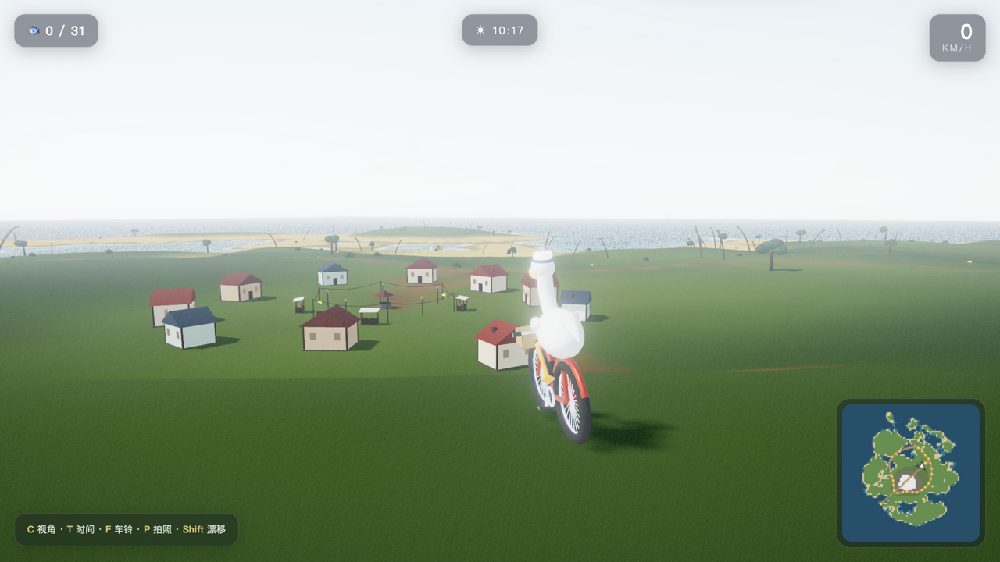
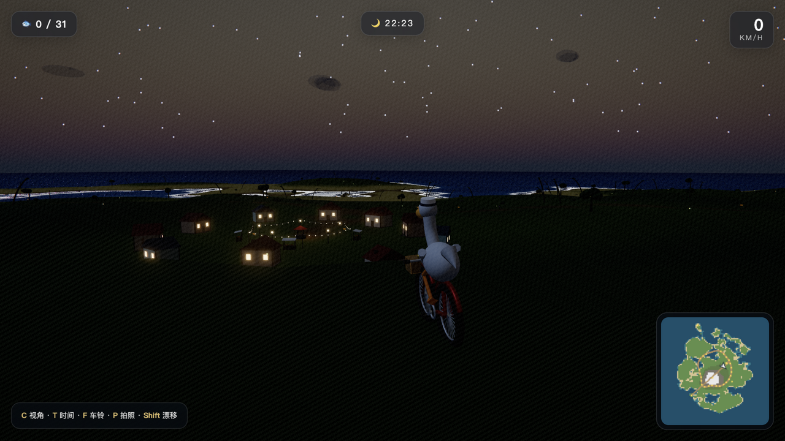
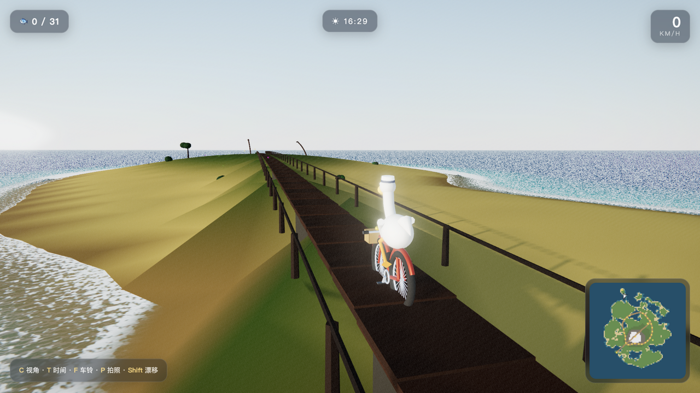

上个月,我让 9 个国产模型画「一只骑自行车的鹈鹕」,横评了谁画得对。这个月换个问法:能不能不画了——直接造一个世界,让那只鹈鹕真的骑上去?于是有了《鹈鹕环岛记》:纯 Three.js,约 2800 行,零模型、零贴图、零音频文件,一只戴水手帽的鹈鹕、一辆红色自行车、一座半径一公里、会呼吸的岛。
上一篇的结论是:文生图组会「骑」但细节乱,SVG 组结构对但动作僵,最关键的一道采分点始终没被真正拿下——腿和踏板的关系。既然画不准,干脆换赛道:把鹈鹕、自行车、踏板全部变成三维空间里真实的几何体,腿的位置每一帧用 IK 解出来,想错都难。
设定也随之展开:岛要足够大(半径约一公里,骑完环岛公路要一两分钟),东西要足够多——环岛公路、十栋小屋的渔火村、夜间旋转光束的灯塔、雪线观景台的主峰、风力发电机、荷兰风车、观海栈桥与帆船、沙滩篝火、317 米跨海大桥与离岛「鹈鹕岩」、两只热气球、海鸥编队、蝴蝶与萤火虫,以及 40 条等它收集的小鱼。外加 15 分钟一整天的昼夜循环。
而整座岛最硬的一条约束是:零美术资源。没有模型、没有贴图、没有音频文件,所有几何用基元拼、颜色用顶点色写、水面天空用 shader 画、连风声浪声车铃声都是 WebAudio 现场合成的。Everything is code.
路面和草地抓地力不同,坡度会真实地拖慢或加速你;撞进草丛会扬起草屑,漂移会拖出尘尾。追尾相机带一点侧偏和速度 FOV,骑得越快视野越广。
整个岛只有一个函数说了算:terrainHeight(x, z)。simplex 噪声先做域扭曲,让海岸线歪歪扭扭;再套一层海岛掩膜,指数取 1.28 让海岸坡度放缓、堆出宽沙滩;主峰和离岛各是一枚高斯凸起;村庄和灯塔海角做「台地」压平;最后,跨海大桥和栈桥的桥面直接写进高度场。地形网格、植被散布、建筑地基、骑行物理、小地图——万物都查这同一个函数,所以车轮永远贴地、贴桥,不存在「模型和地形对不齐」这种事。
海面是一支手写的 shader:两层反向滚动的程序化法线叠出波纹,菲涅尔把天空色抹在水面上,太阳和月亮各有一路 glitter 高光;岸边那圈会闪动的泡沫和浅滩的透亮,来自一张 256² 的烘焙高度图——shader 里拿「海平面减地形高度」算深度,深度小就有泡沫、就透明,看到底下的沙。
昼夜系统刻意做得极简:按太阳高度角插值的 5 个配色关键帧(夜→晨昏→金时→昼),一份调色板同时喂给雾色、水面三色、阳光颜色和半球光。于是黄昏来临时,天、海、雾、光一起变金,不需要任何额外的特判。Sky 物理天空配合 PMREM 环境光每 2.5 秒重生一次;星星和月亮各是一个 Points 和一个球;阴影相机不覆盖全岛,而是跟着玩家走,保证近处的影子永远清晰。
6000 多株植被全是 InstancedMesh:棕榈、阔叶树、高山松、灌木、岩石、野花、草,每个物种两三个变体,顶点色 + 一维 aSway 风摆权重,合并成一个几何体一次画完。风是往标准材质里 onBeforeCompile 注入的十几行 GLSL,相位来自实例位置,所以每棵树摆得都不一样。建筑同理:基元拼装 + 合并 + 顶点色,窗户单独实例化,入夜改一个 emissiveIntensity,全村的窗火一起亮。


上一篇的采分点是「腿要够到踏板」。这次它不是画出来的,是解出来的:曲柄转到一个角度,踏板的位置解析可算;髋到踏板之间,膝关节用平面圆交一步求出;大腿小腿两根骨骼,各自朝两个关节点摆正——每帧一次双骨 IK。加速时踏频变快,倒车时腿反着蹬,跳起来时脚会离开踏板。
翅膀不是装饰:末端目标点始终锁在车把握把上,转向时车把转,翅膀跟着摆。头会看向转向方向,身体随踏频颠簸、随速度压弯。收集到的小鱼直接插进车筐里,最多五条——收集反馈长在角色身上,比任何 UI 都直观。
顺手还它一件上个月没人给的东西:水手帽。上个月最强的一张图给鹈鹕穿了小皮鞋,这次轮到帽子了。

这种全程序化项目,写完只是开始,「跑起来看一眼」才是主战场。四个印象最深的:
smoothstep(1.6, 0.3, 地形高度)),内陆洼地直接不画水;顺手把水体 depthWrite 关掉,岸线反而更干净了。还有一个工程外的花絮:项目里 player.js 被本地安全扫描器连续误判「命令注入」拦截写入,最后按既有经验走 Node REPL 落盘——AI 给 AI 写代码,连审查都是 AI,时代感这块是拉满了。
最后照例交代录制方法:页面里 canvas.captureStream(30) 接 MediaRecorder 录 WebM,ffmpeg 压成 2.8MB——比任何录屏软件都省事。
试玩入口:bayshier.github.io/pelican-isle · 仓库:bayshier/pelican-isle · 前传:鹈鹕骑自行车测试:9 个国产模型横评